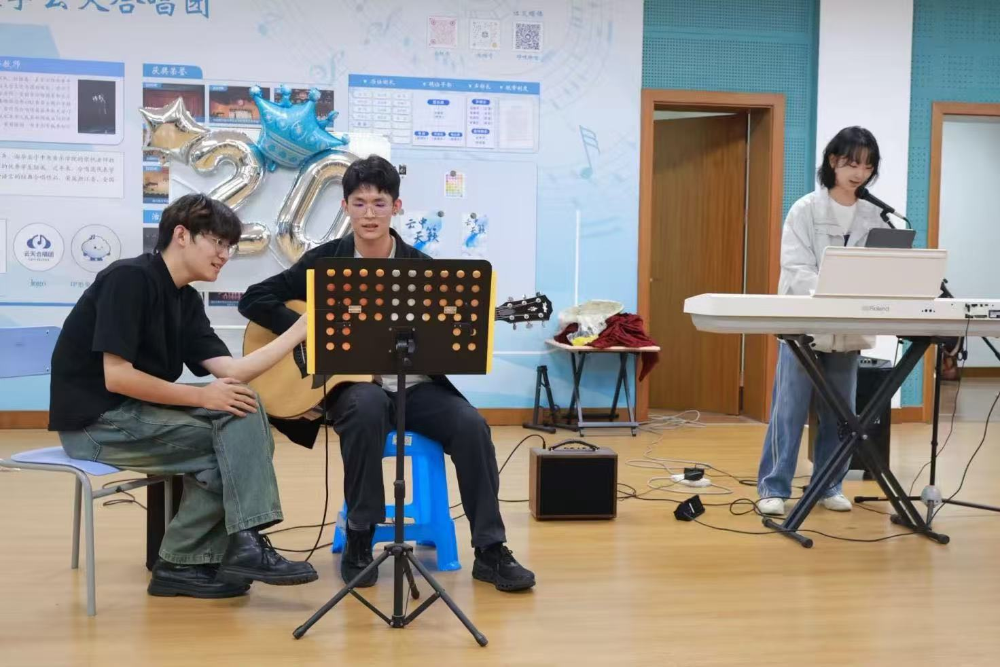
指弹吉他
能弹日本全国冠军曲目《Like a Star》
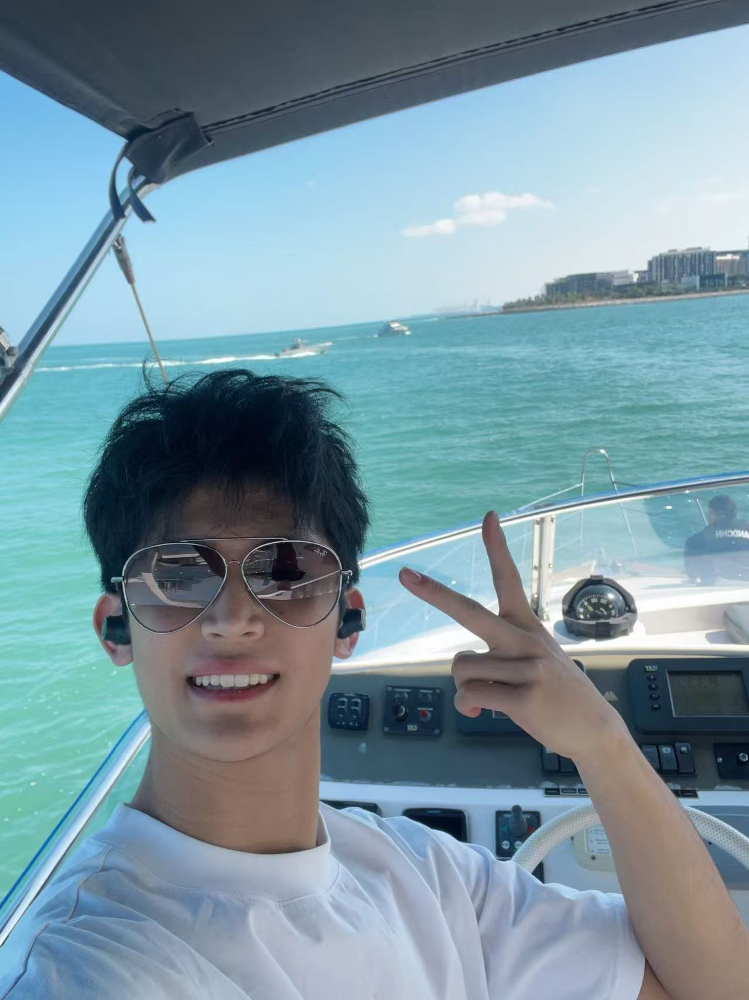
我是郑翔鸣，浙江工商大学管理工程与电子商务学院（跨境电商学院）26 级新生。喜欢碰没学过的东西，也爱给自己上强度——所以一边跑马拉松、一边玩指弹吉他，一边折腾 AI 工具。这个网站就是我自己搭的——纯 HTML/CSS 手写，从内容到页面；如果你正在看，它已经成了。
家里做跨境外贸，不过是传统型、不是电商。我想在上一辈打下的底子上，往线上和更远的市场再走一步——既看得懂数据，也愿意走出去。
一边在 Lighthouse 实验室全面提升综合能力、复盘能力和各项底层能力，一边系统学选品、数据、供应链，试着用 AI 工具提高效率。下一步想去南半球看看，计划参加学校的澳洲双校访学。

能弹日本全国冠军曲目《Like a Star》
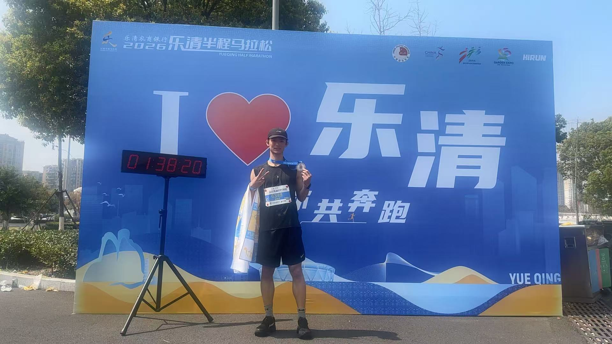
半马 1:38:20，引体向上 30+，篮球是日常
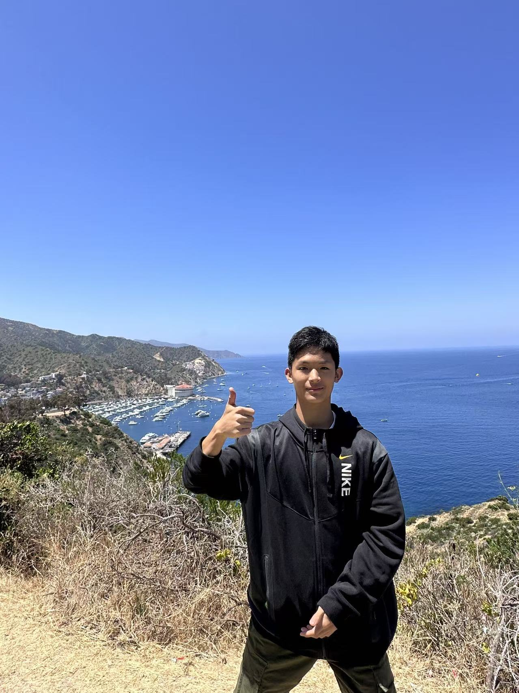
自己规划行程，去过美国、阿联酋、国内多城
不写「综合素质强」，直接看数字。
跨境电商专业 26 级，正在系统学选品、数据、供应链这些「卖货之外」的东西。Lighthouse 互联网实验室成员，在实验室里全面提升综合能力、复盘能力和各项底层能力，用 AI 工具做行业拆解和内容输出——最近的作品就是这个网站。
平均配速 4'40"
2026.3.22 乐清半马净成绩；中国田协「大众二级」+ 浙江「浙马一级」。3 张证书可点击放大查看。
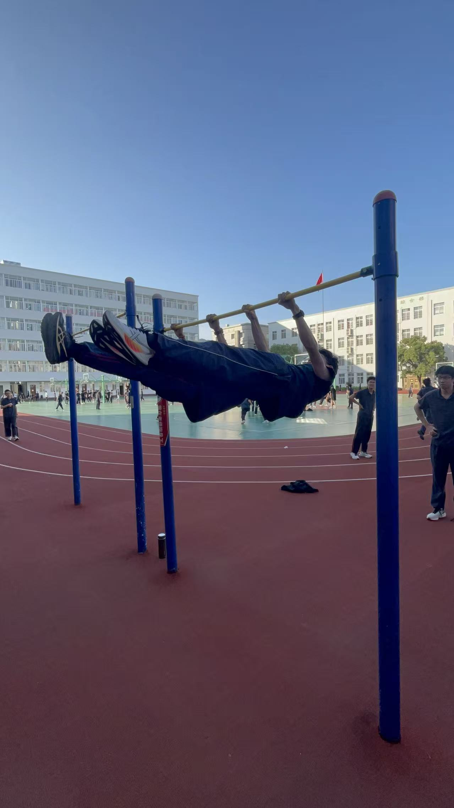
引体向上 · 街健 · 前水平
指弹吉他 · 能弹日本全国冠军曲目
会吹萨克斯，篮球是日常
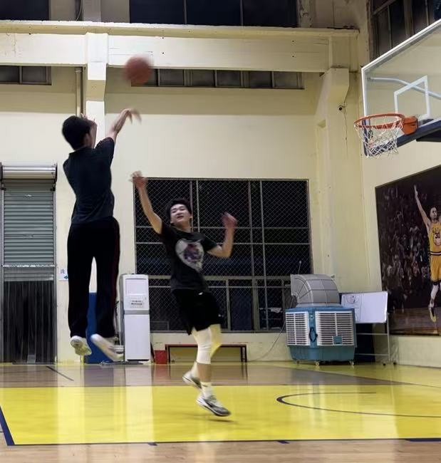
这一件，是我从零亲手做的。
你正在看的这一页，是我从零手写的——纯 HTML/CSS、响应式，从需求、内容到页面全程多 AI 协作。做它的过程比成品更值：我第一次完整走了一遍「想法 → 上线」。
时间线，按时间从早到晚。
多年指弹，能弹日本全国冠军曲目《Like a Star》；跑马拉松、玩街健、打篮球，一直是生活的一部分。
3 月 22 日乐清半程马拉松净成绩 1:38:20，中国田协「大众二级」+ 浙江「浙马一级」。
跨境电商专业 26 级，管理工程与电子商务学院（跨境电商学院）。
互联网实验室成员，在这里全面提升综合能力、复盘能力和各项底层能力。
实验室第一周任务，用五维框架拆解特斯拉 FSD 自动驾驶。
用纯 HTML/CSS 手写你现在看的这一页，从需求、内容到页面全程多 AI 协作。
走出去，一半练能力，一半开眼界。
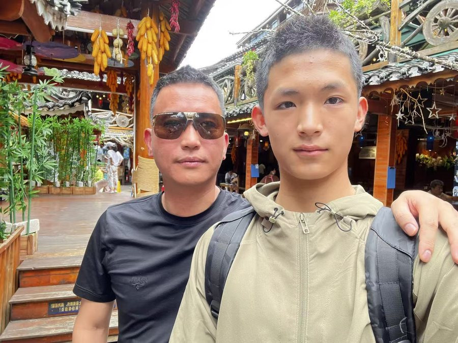
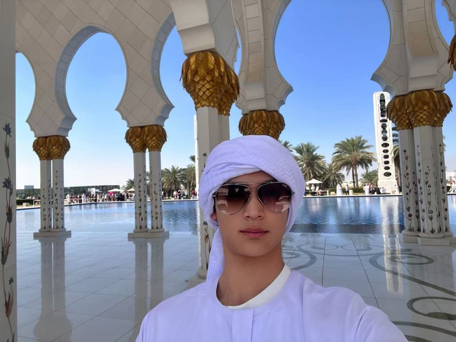
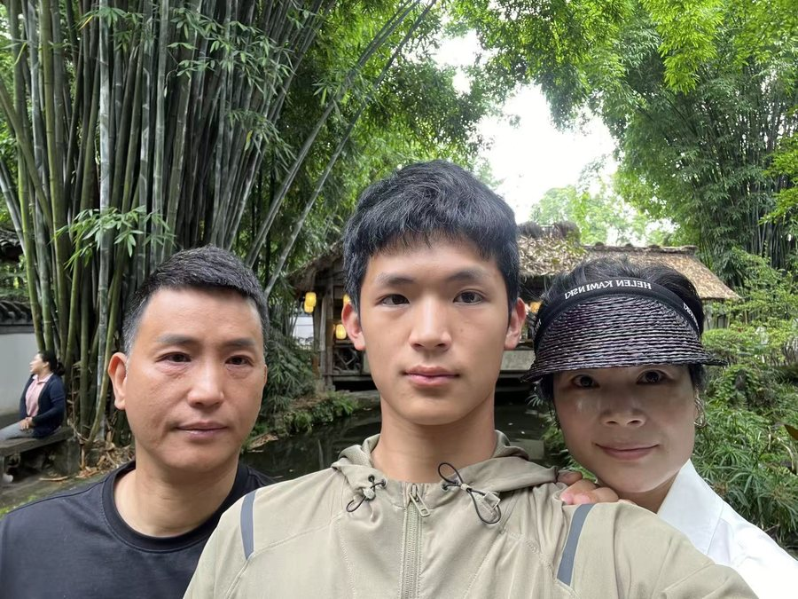
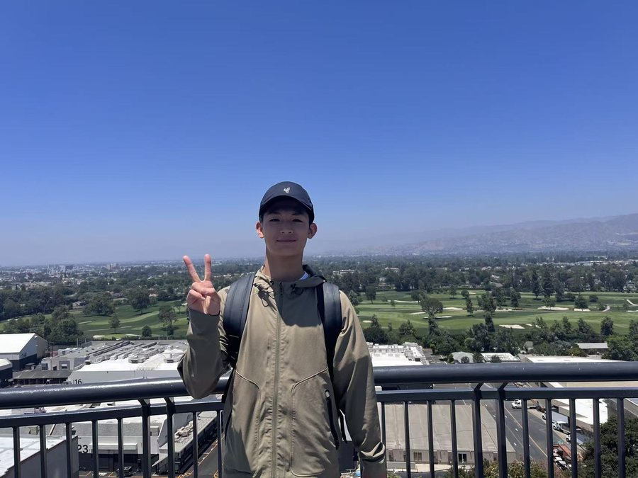
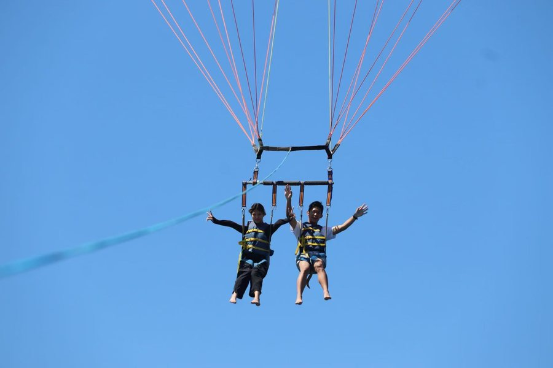
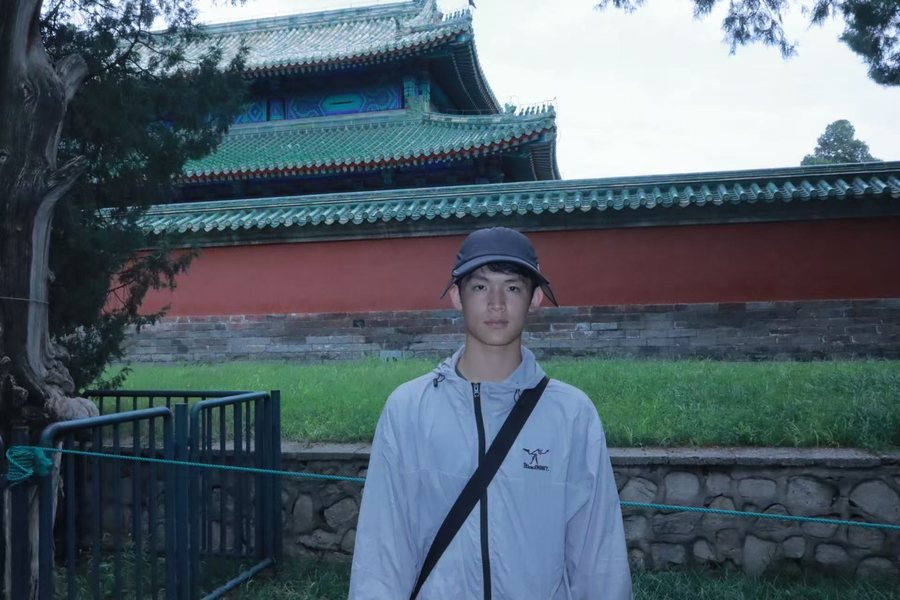
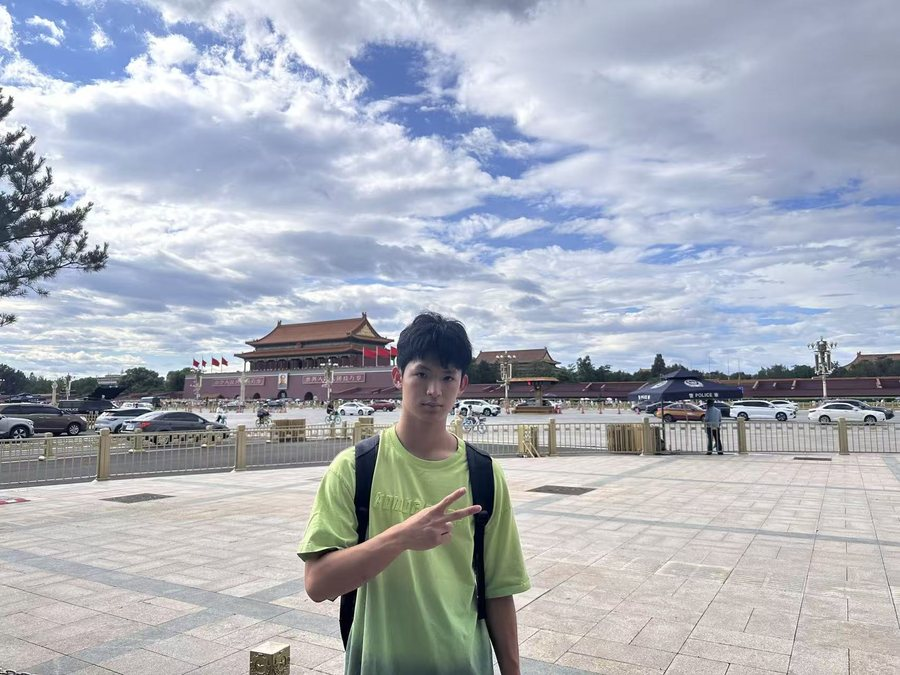
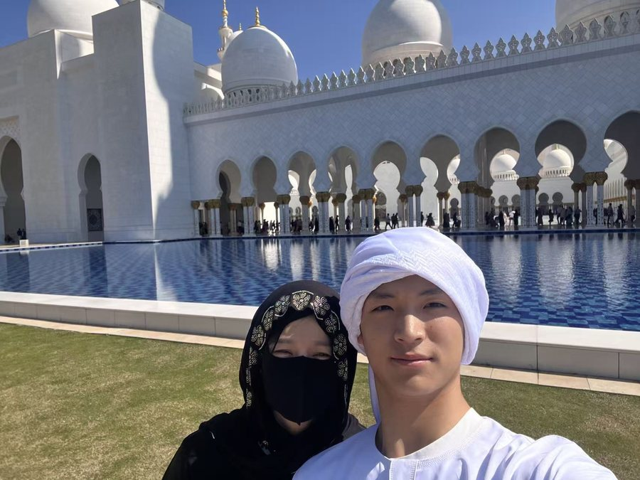
去过美国、阿联酋（迪拜等），国内也跑了不少城市。这些行程大多是我自己规划的——订机票、找住宿、排路线，独立出门这件事已经不用别人帮忙。下一步想去南半球看看，计划参加学校的澳洲双校访学。